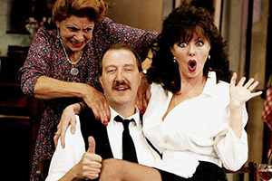
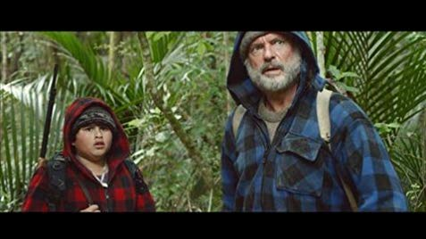
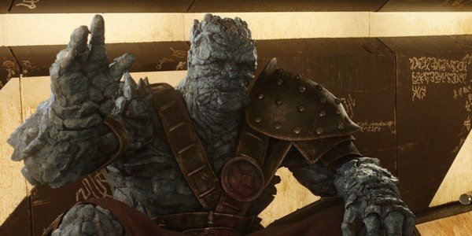

Filmmaker, actor, and writer Taika Waititi is responsible for some of the biggest films to emerge from New Zealand over the past decade. In both 2016's Hunt for the Wilderpeople and 2014's What We Do in the Shadows, Waititi mines comedy out of unexpected material and creates movies that defy easy categorization. As he finishes his first foray into big-budget Hollywood filmmaking—Thor: Ragnarok, due out later this year—Waititi opens up on what he finds funny and the various ways you can mine for laughs in your work.
What I usually do is write a draft or two and I won’t think too much about the length. Usually my scripts don’t go over 110, 120 pages. I’m pretty good at that. Then I know I’ve got a record of that and whatever jokes are in there. Eventually I’ll read it once or twice, usually once, and then delete it off my computer. Put it somewhere, a drive somewhere, and get it off my computer. And then I rewrite it again from memory. Based on what I remembered from reading it.
Usually it’s the bare bones of the story and the most resonant bits. Usually, the script is 70 pages. You’ve got rid of everything and then you come back in. That’s the leanest, tightest version of the film. It’s not funny, it’s got no real heart or anything, but it’s the structure. That’s where I’ll start putting things back in and try to balance it out again. Usually I’ll just start working that humor back in. I’ll make some alt versions, but I’ll try to do the longest version of the scene knowing that I can cut it down. I love having options. It’s better to have a little bit too much.
I’m very aware of when people tell me something is going to be funny and then I watch it, and I feel either snobbish or I feel like I’m alone on an island where I don’t find everything funny that everyone else finds funny. It happens a lot with TV shows. People will say, “You gotta watch this show. It’s hilarious.” I can watch the entire episode and not laugh once. It’s got the comedy font in the title. It’s obviously a comedy.
It’s something I worry about, “Is my taste too snobbish? Is it too refined? Have I pushed my expectations of what’s funny too far?” I’ve got to watch out that I don’t get too elitist about what is good comedy. Just from growing up with British comedy, I very much prefer that style of comedy over American comedy. Sometimes it can kind of color the way I approach watching something.
I’ve got to watch out for myself not being open-hearted or open-minded enough to accept that something might be funny. You’re caught in the middle, because you don’t want to force yourself to think that something is funny. I don’t know any of the real rules. I just know what I think is funny. I think it usually comes from the taste that I’ve developed over the years, stuff I feel that myself and my friends would find funny, and just instinctually what will make me laugh.
It’s something different every time. Sometimes it’s maybe the line of dialogue, the fact that someone could not say the line properly, or it’s a performance thing—it’s subtle, some sort of character nuance that does it for me, but I don’t know any rules.
In terms of preventing the “not funny,” you can feel it. I feel it all the time if I’m performing or if I’m acting in something. I just know. I’ll be like, “Okay, I’ll go take a minute to just figure out what it is.” Maybe it’s just rewording something. It’s probably different for people who are just writers. I write, perform, and direct as well, so it’s a lot for me. It’s timing and experimenting with pauses and how big a gap is before the punch line or before the non punch line.
There’s another balancing act that I usually have to deal with, which is that my films, apart from What We Do In The Shadows, which I co-directed, aren’t just straight out comedies. Sometimes people find it a little hard to know how to give themselves over to my films, or how to trust it. It’s okay to laugh or not laugh. I like when something tragic is happening and then it’s undercut with a laugh or something’s funny and then the carpet’s pulled out and it just nose dives into a tragedy.
I like a bit of see-saw going on, though it takes a long time to edit and get right. A lot of audiences will be uncomfortable with that. Like in Hunt for the Wilderpeople when this tragedy happens in the first act, and then the very next scene is this ridiculous funeral scene. A lot of people liked it, but also a lot of people didn’t know how to handle that because they thought, “This is so disrespectful to treat a funeral scene like that.” I found it more like real life because it was based on a real funeral that I’d been to. We actually shot a version of the funeral, which was completely a normal sad, boring, funeral, but for me it had no real impact. It’s just not interesting to see.
I guess writing because you’re never sure if it’s even gonna be made. It’s such a lonely place—writing. Production for me is amazing, it’s my favorite part. You’re in the toy box, making stuff up on the spot and you’re laughing. It’s so fun and so alive. It’s like being on stage.
But then in reality, probably the most creative part is post-production, when you’re actually putting it together, trying to make it funny. It’s probably the part that’s most painful, too. You understand why it’s not working when it was working on set in the moment. That’s why post is so important, especially with comedy. What’s really exciting are the discoveries. I don’t think I’m scared of any part of the process, but I always get the most worried about screening things and hoping that people find them funny, because I find it funny and if you show it to a room and there’s just the tiniest chuckle from one or two people, it’s not working. There’s that cringing. You want to stop the film and take it away. “We’ll work on it. We’ll work on it. See you in a week!”
Fuck yeah! In every film there’s something that’s a total bomb that you think on the page is so good. I think often it’s because you’re hamstrung by the circumstances especially in low budget films. Sometimes it’s a timing thing between the actors. If you’ve got a low budget, you’re always pushed for time. Sometimes I’ve been so desperate to get the timing right and it’s just never happened. It’s like trying to explain to the actors and then they get frustrated and then, “Okay, fuck it, it’s just a joke who cares? Let’s just move on.” But usually it’s running out of time. Otherwise, I would keep going all day until I got it.
Those time constraints really threaten stuff, but I don’t think I’ve ever done more than 30 takes on anything. The worse is when you’re trying to do a single shot that’s also got jokes in it. Those are the hardest thing. It’s fine if it’s a stylistic thing and it’s one big long take, but if there’s a comedy in it, it fucking becomes five times harder.
Line readings. I’ll give them a line reading. I’ll say, “Just say it exactly like this.” Sometimes, I’ll just say, “Count to three and then say that…” And give them the pauses. Sometimes it can be funny to see someone counting in their head before saying their line. Most people I think are funniest when they’re being natural. They’re not trying to be funny.
The worst is actors who go, “Oh, can I do an ad-lib take? Do an improv take?” I’m always like, “Okay, are you sure you want to do this in front of everyone?” And they do it and they just start saying the first things that come to their head and have nothing to do with the scene, nothing to do with anything. You’ve got to watch out for that, and then you’ll say, “Cool we did that, now we’ll do one more where you just say the lines. I’m gonna point at you and you just say the lines when I point, okay?”
Giving people obstacles and giving them limitations and saying, “This entire scene, you’re not allowed to move your hands.” Though you don’t want to be wasting all your time on set exploring and finding a performance. You prefer people to have that down before they get there. Sometimes you just have to do it. You have to save the scene or save the character somehow. Usually it only happens with roles that aren’t the main characters, someone that’s doing a small part here and there.
Yeah, that’s understandable. Make it worthwhile. They want to do good job.
The worst is with comedy. It’s actually painful to watch someone, when the whole crew is sitting around watching them saying stuff, and halfway through a take to see them realize they’re not funny. I start cracking up at that, because that to me is funny. When someone discovers they’re not funny in the middle of a performance, that to me is gold. I’ve got that very subtle, sadistic kind of god complex when it comes to that kind of stuff.
I like controlling situations. I like telling people what to say. I like telling people what to do and manipulating those little situations, because I’m not necessarily a typical director. I still don’t know all the names of all the gear on set, but I usually know what I want from actors. I love that part of it. I tell people early on, “This is what I do, don’t be frustrated. I’m not trying to sabotage your performance. I’m just trying to have an evolving conversation.”
I interrupt right in the middle of lines all the time. I’m sure that can be frustrating, but I find it more a conversation really. What’s great about digital now is that I get that camera rolling and just keep going. My first-year films were shot on film and you’re so fucking panicked that you’re running out of film. You’re trying to rush them, but now I’m starting to really love the freedom that digital affords.
Yeah, and I can also watch and laugh at my performances. It’s weird. I’m often very embarrassed watching myself. I don’t know what it is, but I can distance myself from the character or performance that I’m doing enough to laugh, really laugh and love it. I don’t know if it’s because I’m good, I just think that it’s working. I find it funny, because I’m also the first person who will suggest cutting all of my stuff out of the movie, you know?
I’m not precious at all about the stuff I do, but for instance, in Thor: Ragnarok I’m doing a character and I find it funny. He’s basically like the guy from home from where I grew up. I find it funny a guy like that could be an alien or could be in outer space. He’s like a Kiwi guy. Every time I see him in a situation, it’s like, “How the fuck are they letting me do this?” That’s cool that it can be that strange. I’m laughing at the fact that I’m doing this for a job. I like that. I’m playing an uncle from my neighborhood in a Thor film. It’s so funny.
2003: A short film from 2003 in which some kids meet up in the parking lot of a pub in rural New Zealand and forge a tenuous friendship.
Eagle Vs Shark(2007): An oddball romantic comedy, written and directed by Waititi, which stars Flight of the Conchords’ Jemaine Clement as an eccentric man who pauses his lifelong quest to take revenge on his high school bully in order to romance a fast food waitress.
Boy(2010): This coming of age story about “heroes, magic and Michael Jackson,” again both written and directed by Waititi, takes place in the Waihau Bay area of New Zealand, where Waititi himself grew up. The film eventually became the highest grossing New Zealand film of all time.
What we do in the Shadows(2014): A horror/comedy/mockumentary about a group of vampires in New Zealand struggling to adapt to the modern world. Written and directed along with Jemaine Clement, Waititi also stars as an uptight vampire who happens to be 379 years old.
Hunt for the Wilderpeople(2016): Based on the book Wild Pork and Watercress by Barry Crump, the film follows a juvenile delinquent and his cantankerous foster father as they become targets of an ill-informed manhunt after they flee into the New Zealand bush.